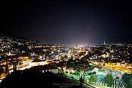

Economy of Bosnia and Herzegovina
|  Sarajevo, the financial centre of Bosnia and Herzegovina | |
| Currency | Bosnia and Herzegovina convertible mark (BAM) |
|---|---|
| Calendar year | |
Trade organisations | CEFTA, WTO (observer) |
Country group |
|
| Statistics | |
| Population | |
| GDP | |
| GDP rank | |
GDP growth | |
GDP per capita | |
GDP per capita rank | |
GDP by sector |
|
| −0.6% (2020 est.)[4] | |
Population below poverty line | 17.5% (2021)[6] |
Labour force | |
| Unemployment | |
Average gross salary | |
Main industries | steel, coal, iron ore, lead, zinc, manganese, bauxite, vehicles, textiles, tobacco products, furniture, tanks, aircraft, domestic appliances, oil refining |
| External | |
| Exports | $8.9 billion (2022)[15] |
Export goods | electricity, car seats, iron structures, aluminium, furniture |
Main export partners |
(January, 2022)[16] |
| Imports | $11.37 billion (2021)[15] |
Import goods | crude oil, automobiles, motor oil, coal, briquettes |
Main import partners | |
FDI stock | |
Gross external debt | |
| Public finances | |
| +2.1% (of GDP) (2017 est.)[18] | |
| Revenues | 7.993 billion (2017 est.)[18] |
| Expenses | 7.607 billion (2017 est.)[18] |
| |
All values, unless otherwise stated, are in US dollars. | |
.jpg){kind=link}
The economy of Bosnia and Herzegovina is a transitional, upper middle income economy.[18] Bosnia and Herzegovina declared independence from socialist Yugoslavia on 1 March 1992. The main trading partners are Germany, Italy, Austria, Turkey and other neighboring Balkan countries.
Overview
[edit]Bosnia and Herzegovina is an upper middle-income country which has accomplished a great deal since the mid-1990s. Today, it is an EU candidate country and is now embarking on a new growth model amid a period of slow growth and the global financial crisis.[23] Bosnia and Herzegovina is a small, open economy, dominated by services, which accounted for 55% of gross domestic product (GDP) in 2016, with a moderately developed industrial and manufacturing sector (23% and 12%, respectively), and a limited agricultural base (about 6% of GDP).[24]
The konvertibilna marka (convertible mark or BAM) - the national currency introduced in 1998 - is pegged to the euro, and confidence in the currency and the banking sector has increased. Implementation of privatization, however, has been slow, and local entities only reluctantly support national-level institutions. Banking reform accelerated in 2001 as all ; foreign banks, primarily from Western Europe, now control most of the banking sector. A sizable current account deficit and a very high unemployment rate remain the two most serious economic problems. The country receives substantial amounts of reconstruction assistance and humanitarian aid from the international community but will have to prepare for an era of declining assistance.
The United States Embassy in Sarajevo, Bosnia and Herzegovina produces the Country Commercial Guide – an annual report that delivers a comprehensive look at Bosnia and Herzegovina's commercial and economic environment, using economic, political, and market analysis.[25]
According to Serbian American economist, Branko Milanović, Bosnia and Herzegovina did the best job in the transition from socialism to capitalism when compared to the other republics of the former Yugoslavia. From 1985 until 2021, Bosnia and Herzegovina performed the best on the annual average GDP growth per capita (1.6%), Slovenia (1.4%), Croatia (1%), Serbia without Kosovo (0.9%) and North Macedonia (0.5%).[26]
At the time of the Socialist Federal Republic of Yugoslavia (SFRY), Bosnia and Herzegovina was an important mineral processing centre and provided the other republics with basic mineral commodities in exchange for current consumption goods. While large amounts of public capital investments poured in during the 1970s, productivity levels remained low, often due to the limited capacity of public managers.[24] Under former republican premier Džemal Bijedić, and Yugoslav president Tito, metal-product industries were promoted in the republic, resulting in the development of a large share of Yugoslavia's metal products plants.
Merging small firms into larger agglomerates was a common practice in the SFRY to preserve employment levels. As a result, four large conglomerates emerged in Bosnia and Herzegovina over time: Energoinvest (energy sector), Unis (automotive and defence industry, which partnered with Volkswagen in the early 1970s), Šipad (wood processing) and RMK Zenica (steel industry, later acquired by ArcelorMittal). Construction and defence were important industries in the Bosnian economy, despite their low efficiency and, ultimately, excess supply. The defence industry was particularly developed in the southern districts and around Mostar, which was also a relevant metallurgical centre (Aluminij Mostar). Machinery production was concentrated in the north, particularly around Banja Luka. The Tuzla district was renowned for its chemical industry. The automotive industry, which developed in the 1950s with the production of vehicle components, extended later on to passenger and commercial vehicles, with plants in Sarajevo, Mostar and Banja Luka. Agriculture was not highly developed, despite its importance for employment and the presence of the large Agrokomerc conglomerate based at the north-west border with Croatia.[24]
Tito had pushed the development of metal industries, and electro-energetic sector, in the republic with the result that Bosnia and Herzegovina were a host of large numbers of industrial firms. Some of them were worked with World brand names, companies like Coca-Cola, Pepsi, Marlboro, Volkswagen and SKF. Big Companies like Energoinvest, UNIS, Hidrogradnja, Vranica, RMK Zenica, TAS Sarajevo, FAMOS Sarajevo and BNT Novi Travnik, have yearly income in billions of USD$ at that time. Building sector companies bringing large amounts of income in USD$. Unemployment at that time is very low. Work force is highly skilled, with highly professional, educated managers, engineers, science experts, which use western world's newest technologies in large scale areas. Before the war, Yugoslav premier Ante Marković, made some preparations for privatization, in economy, finance, and industry sectors, but the war ceased development in these actions.
The economy suffered heavily from the war in Bosnia and Herzegovina, with over €200 billion in material damages[27] and GDP (excluding services) reduced by 90% between 1990 and 1995. Today, most of the above-mentioned companies have been privatised. The economy remains fragile, primarily consumption driven and vulnerable to external fluctuations. This was seen with the global economic crisis, which pushed Bosnia and Herzegovina into recession in 2009 and 2012 (with GDP growth of -3% and -0.8%, respectively) and severe floods in 2014, which caused damage of approximately 15% of GDP. Since 2015, annual GDP growth has increased to more than 3%. Still, the country registered a current account deficit of 4.7% of GDP in 2017, decreasing from 5.3% in 2015, resulting from a reduction in its trade deficit, which nevertheless remains large (17.4% of GDP in 2017).[24]
A Central Bank of Bosnia and Herzegovina was established in late 1997, debt negotiations were held with the London Club in December 1997 and with the Paris Club in October 1998, and a new currency, the Bosnia and Herzegovina convertible mark, was introduced in mid-1998. In 1999, the Convertible Mark gained wider acceptance, and the Central Bank dramatically increased its reserve holdings. Due to Bosnia's strict currency board regime attaching the Bosnian mark to the Euro, inflation has remained low in the entire country.
With an uneasy peace in place, output recovered in 1996–99 at high percentage rates from a low base; but output growth slowed in 2000–02. The country receives substantial amounts of reconstruction assistance and humanitarian aid from the international community. Support for East European Democracy (SEED) assistance accounts for 20%-25% of economic growth in Bosnia and Herzegovina. However, growth has been uneven throughout the post-war period, with the Federation outpacing the RS.[clarification needed] According to World Bank estimates, GDP growth was 62% in the Federation and 25% in the RS in 1996, 35% in the Federation and flat in the RS in 1997, and continued growth in the Federation in 1998.
The movement has been slow, but considerable progress has been made in economic reform since peace was re-established. Banking reform lagged, as did the implementation of privatization. Many companies (mainly factories) that were privatized faced massive problems, causing the owners to reduce salaries and deny the workers their salaries, and some of the new owners and tycoons destroyed those factories.
Macro-Economic
[edit]The following table shows the main economic indicators in 1997–2023.[4]
| Year | GDP (in Bil. US$ PPP) |
GDP per capita (in US$ PPP) |
GDP (in Bil. US$ nominal) |
GDP per capita
(in US$ nominal) |
GDP growth (real) |
Unemployment rate (in Percent) |
Debt |
|---|---|---|---|---|---|---|---|
| 1996 | 11.394 | 3,027 | 3.584 | 952 | |||
| 1997 | 14.239 | 3,811 | 4.578 | 1,225 | 22.9% | 44,6% | |
| 1998 | 16.389 | 4,391 | 5.281 | 1,415 | 29.3% | 54.3% | |
| 1999 | 18.406 | 4,917 | 5.766 | 1,540 | 31.1% | 56% | |
| 2000 | 19.659 | 5,241 | 5.554 | 1,480 | 4.4% | 31.1% | 34.6% |
| 2001 | 20.577 | 5,479 | 5.784 | 1,540 | 31.1% | 35.2% | |
| 2002 | 21.954 | 5,840 | 6.711 | 1,785. | 31.1% | 31.2% | |
| 2003 | 23.251 | 6,183 | 8.477 | 2,254 | 31.1% | 27.6% | |
| 2004 | 25.369 | 6,741 | 10.157 | 2,699 | 31.1% | 25.5% | |
| 2005 | 27.273 | 7,241 | 10.935 | 2,903 | 4,2% | 31.1% | 25.5% |
| 2006 | 29.714 | 7,885 | 12.460 | 3,306 | 5.7% | 31.1% | 21.2% |
| 2007 | 32.342 | 8,597 | 15.323 | 4,073 | 6.0% | 32.4% | 18.7% |
| 2008 | 34.806 | 9,271 | 18.712 | 4,984 | 5.6% | 34% | 30.9% |
| 2009 | 34.743 | 9,299 | 17.601 | 4,711 | −0.8% | 35% | 35% |
| 2010 | 35.431 | 9,565 | 17.164 | 4,633 | 0.8% | 34% | 40.8% |
| 2011 | 36.495 | 9,971 | 18.629 | 5,089 | 0.9% | 31% | 39.6% |
| 2012 | 37.104 | 10,292 | 17.207 | 4,773 | −0.7% | 30% | 42.2% |
| 2013 | 38.975 | 11,003 | 18.155 | 5,125 | 2.4% | 31% | 42.5% |
| 2014 | 39.732 | 11,410 | 18.522 | 5,319 | 1.2% | 32% | 45.9% |
| 2015 | 41.195 | 12,013 | 16.210 | 4,727 | 3.1% | 35% | 45.5% |
| 2016 | 44.253 | 13,069 | 16.910 | 4,994 | 3.2% | 25.4% | 44.1% |
| 2017 | 46.394 | 13,836 | 18.081 | 5,392 | 2.7% | 20.5% | 39.5% |
| 2018 | 49.279 | 14,829 | 20.184 | 6,073 | 3.5% | 19.4% | 34.3% |
| 2019 | 51.581 | 15,625 | 20.203 | 6,120 | 3.9% | 15.7% | 32.5% |
| 2020 | 49.943 | 15,231 | 19.789 | 6,034 | −6.5% | 19% | 36.5% |
| 2021 | 57.733 | 16,584 | 23.673 | 6,800 | 5% | 17.5% | 34.5% |
| 2022 | 64.314 | 18,517 | 24.520 | 7,059 | 3.2% | 15.7% | 29.7% |
| 2023 | 68.012 | 19,633 | 26.945 | 7,778 | 4% | 13.1% | 28.6% |
| 2024 | 71.254 | 20,622 | 29.078 | 8,415 | 3% | 28,1% |
Present
[edit]{kind=link}
Overall value of foreign direct investment (1999–2011):[28]
- 1999: €166 million
- 2000: €159 million
- 2001: €133 million
- 2002: €282 million
- 2003: €338 million
- 2004: €534 million
- 2005: €421 million
- 2006: €556 million
- 2007: €1.628 billion
- 2008: €1.083 billion
- 2009: €434 million
- 2010: €359 million
- 2011: €313 million
- 2022: €730 million [29]
From 1994 to 2011, €6.4 billion were invested in the country.[30]
The top investor countries (1994–2007):[28]
- Austria (€1,294 million)
- Serbia (€773 million)
- Croatia (€434 million)
- Slovenia (€427 million)
- Switzerland (€337 million)
- Germany (€270 million)
- Italy (€94.29 million)
- Netherlands (€63.52 million)
- United Arab Emirates (€56.70 million)
- Turkey (€54.81 million)
- All Other Countries (€892.54 million)
Foreign investments by sector for (1994–2007):[28]
- 37.7% Manufacturing
- 21% Banking
- 4.9% Services
- 9.6% Trade
- 0.30% Transport
- 1% Tourism
By some estimates, grey economy is 25.5% of GDP.[31]
Recent years
[edit]2017
[edit]In 2017, exports grew by 17% when compared to the previous year, totaling €5.65 billion.[32] The total volume of foreign trade in 2017 amounted to €14.97 billion and increased by 14% compared to the previous year. Imports of goods increased by 12% and amounted to €9.32 billion. The coverage of imports by exports has increased by 3% compared to the previous year and now it is 61 percent. In 2017, Bosnia and Herzegovina mostly exported car seats, electricity, processed wood, aluminium and furniture. In the same year, it mostly imported crude oil, automobiles, motor oil, coal and briquettes.[33]
The unemployment rate in 2017 was 20.5%, but The Vienna Institute for International Economic Studies is predicting falling unemployment rate for the next few years. In 2018, the unemployment should be 19.4% and it should further fall to 18.8% in 2019. In 2020, the unemployment rate should go down to 18.3%.[34]
On 31 December 2017, the Council of Ministers of Bosnia and Herzegovina issued the report on public debt of Bosnia and Herzegovina, stating that the public debt was reduced by €389.97 million, or by more than 6% when compared to December 31, 2016. By the end of 2017, public debt was €5.92 billion, which amounted to 35.6 percent of GDP.[35]
As of 31 December 2017, there were 32,292 registered companies in the country, which together had revenues of €33.572 billion that same year.[36]
In 2017, the country received €397.35 million in foreign direct investment, which equals to 2.5% of the GDP.[37]
In 2017, Bosnia and Herzegovina ranked 3rd in the world in terms of the number of new jobs created by foreign investment, relative to the number of inhabitants.[38][39]
In 2017, 1,307,319 tourists visited Bosnia-Herzegovina, an increase of 13.7%, and had 2,677,125 overnight hotel stays, a 12.3% increase from the previous year. Also, 71.5% of the tourists came from foreign countries.[40]
2018
[edit]In 2018, Bosnia and Herzegovina exported goods worth 11.9 billion KM (€6.07 billion), which is 7.43% higher than in the same period in 2017, while imports amounted to 19.27 billion KM (€9.83 billion), which is 5.47% higher.[41]
The average price of new apartments sold in the country in the first six months of 2018 is 1,639 km (€886.31) per square meter. This represents a jump of 3.5% from the previous year.[42]
On June 30, 2018, public debt of Bosnia and Herzegovina amounted to about €6.04 billion, of which external debt is 70.56 percent, while the internal debt is 29.4 percent of total public indebtedness. The share of public debt in gross domestic product was 34.92 percent.[43]
In 2018, 1,465,412 tourists visited Bosnia-Herzegovina, an increase of 12.1%, and had 3,040,190 overnight hotel stays, a 13.5% increase from the previous year. Also, 71.2% of the tourists came from foreign countries.[44]
In 2018, the total value of mergers and acquisitions in Bosnia and Herzegovina amounted to €404.6 million.[45]
In 2018, 99.5 percent of enterprises in Bosnia and Herzegovina used computers in their business, while 99.3 percent had internet connections, according to a survey conducted by the Bosnia and Herzegovina Statistics Agency.[46]
In 2018, Bosnia and Herzegovina received 783.4 million KM (€400.64 million) in direct foreign investment, which was equivalent to 2.3% of GDP.[47]
In 2018, the Central Bank of Bosnia and Herzegovina made a profit of 8,430,875 km (€4,306,347).[48]
2019
[edit]The World Bank estimates that the economy grew by 2.8% in 2019.[49]
Bosnia and Herzegovina was placed 83rd on the Index of Economic Freedom for 2019. The total rating for Bosnia and Herzegovina is 61.9. This position represents some progress relative to the 91st place in 2018. This result is below the regional level, but still above the global average, making Bosnia and Herzegovina a "moderately free" country.[50]
On 31 January 2019, total deposits in Bosnian banks were KM 21.9 billion (€11.20 billion), which represents 61.15% of nominal GDP.[51]
In the second quarter of 2019, the average price of new apartments sold in Bosnia and Herzegovina was 1,606 km (€821.47) per square meter.[52]
In the first six months of 2019, exports amounted to 5.829 billion KM (€2.98 billion), which is 0.1% less than in the same period of 2018, while imports amounted to 9.779 billion KM (€5.00 billion), which is by 4.5% more than in the same period of the previous year.[53]
In the first seven months of 2019, 906,788 tourists visited the country, an 11.7% jump from the previous year.[54]
In the first six months of 2019, foreign direct investment amounted to 650.1 million KM (€332.34 million).[55]
2020–2022
[edit]2020 saw a contraction in the economy of around 4.7%, caused by the COVID-19 pandemic, with increased costs by the government, before bouncing back in 2021. Employment rates have been climbing, however youth unemployment in 2022 was still over 33%.[56]
2023
[edit]As of 30 November 2023, Bosnia and Herzegovina had 1.3 million registered motor vehicles.[57]
Sarajevo
[edit]{kind=link}
Sarajevo industries now include tobacco products, furniture, hosiery, automobiles, and communication equipment. Companies based in Sarajevo include BH Telecom, Bosnalijek, Energopetrol, FlyBosnia, Sarajevo Tobacco Factory, and Sarajevska Pivara (Sarajevo Brewery).
Sarajevo has a strong tourist industry and was named by Lonely Planet one of the top 50 "Best Cities in the World" in 2006. Sports-related tourism uses the legacy facilities of the 1984 Winter Olympics, especially the skiing facilities on the nearby mountains of Bjelašnica, Igman, Jahorina, Trebević, and Treskavica. Sarajevo's 600 years of history, influenced by both Western and Eastern empires, is also a strong tourist attraction. Sarajevo has hosted travellers for centuries, because it was an important trading center during the Ottoman and Austria-Hungarian empires.
Today, Sarajevo is one of the fastest developing cities in the region. Various new modern buildings have been built, most significantly the Bosmal City Center, ARIA Centar and the Avaz Twist Tower, which is one of the tallest skyscraper in the Balkans. A new highway was recently (2006–2011) completed between Sarajevo and the city of Kakanj. Due to growth in population, tourism and airport traffic the service sector in the city is developing fast and welcoming new investors from various businesses.[58]
Sarajevo has one of the most representable commercial infrastructures in South-East Europe. The Sarajevo City Center is one of the biggest shopping centres in South-East Europe, after its completion in 2014.[59] Airport Center Sarajevo which will be connected directly to the new airport terminal will offer a great variety of brands, products and services.[60]
In 1981, Sarajevo's GDP per capita was 133% of the Yugoslav average.[61]
In 2011, Sarajevo's GDP was estimated to be 16.76 billion US$ by the Central Bank of Bosnia and Herzegovina, comprising 37% of the total GDP of the country.[62]
Mostar
[edit]{kind=link}
Mostar's economy relies heavily on tourism, aluminium and metal industry, banking services and telecommunication sector. The city is the seat of some of the country's largest corporations.
Along with Sarajevo, it is the largest financial center in Bosnia and Herzegovina, with two out of three largest banks in the country having their headquarters in Mostar.[63][64] Bosnia-Herzegovina has three national electric, postal and telecommunication service corporations; These three companies banks and the aluminium factory make a vast portion of overall economic activity in the city.
Aluminij is one of the most influential companies in the city, region, but also country. In relation to the current manufacturing capacity it generates an annual export of more than €150 million. The partners with which the Aluminij does business are renowned global companies, from which the most important are: Venture Coke Company L.L.C. (Venco-Conoco joint Venture) from the US, Glencore International AG from Switzerland, Debis International trading GmbH, Daimler-Chrysler and VAW Aluminium Technologie GmbH from Germany, Hydro ASA from Norway, Fiat from Italy, and TLM-Šibenik from Croatia[5]. Mostar area alone receives an income of €40 million annually from Aluminij.
Prijedor
[edit]{kind=link}
Prijedor is the sixth largest city in Bosnia and Herzegovina. It is an economically prosperous municipality hosting a wide range of industries, services and educational institutions. The city's geographical location close to major European capitals has made it an important industrial and commercial hub nationally. It has a developed financial sector, 11 international banks are represented, 5 microcredit organizations and a foundation for development. The city's huge economic potential is in the strategic geographical location being close to Zagreb, Belgrade, Budapest and Vienna. Giving it one of the best climates for economic expansion in Bosnia and Herzegovina.
The agricultural land around the city, raw minerals in the municipality and growth of high educated population in the city proper gives it a unique combination of both being able to produce sophisticated industrial products, food and service branches.
- Companies
Zenica host today the Bosnian part of ArcelorMittal Steel Company, former RMK Zenica, which employ about 3000 workers, steel company from Luxembourg with over 320,000 employees in more than 60 countries. It also has companies specialized in the chemical industry such as Ferrox a.d., producing iron oxides-pigments. BosnaMontaza AD., one of Bosnias most specialized steel manufacturers, manufacturing: steel construction, pipelines, reservoirs, technological equipment, cranes and energy plants. Other companies such as the Croatian food company Kraš has one of its biggest facilities in Bosnia and Herzegovina in Prijedor, producing confectionery products under the brand names MIRA and Kraš. Brand names such as "Prijedorčanka" is one of the leading producers of the alcoholic beverage Rakija in Bosnia and Herzegovina. Prijedor is also a big enterprise producing cellulose and paper for export.
In 2022, the sector with the highest number of companies registered in Bosnia and Herzegovina is Services with 39,707 companies followed by Retail Trade and Wholesale Trade with 12,060 and 11,970 companies respectively.[65]
- Agricultural sector
{kind=link}
Among this Prijedor has a fruit growing production, gardening production, crop farming production, mill and bakery industries, stock farming production, processing industries and a milk industry.
Lake Saničani, near Prijedor, is one of the biggest commercial fish-farming lakes in the southern Europe.
Prijedor municipality takes up 8340.6 hectares (5845.0 private property and 2495.6 state property). Plowed fields and gardens take up 340.26 hectares, orchards 23.86 hectares and vineyards 5 hectares. All cultivated soil takes up 402.06 hectares.
- Service sector
The service sector in Prijedor is growing rapidly and this reflects in the growth of hotels, stores, roads, educational facilities and shoppings centers that are being built in the city. Making it a growing commercial hub in Bosnia and Hercegovina.
Banja Luka
[edit]{kind=link}
Although the city itself was not directly affected by the Bosnian War in the early 1990s, its economy was. For four years, Banja Luka fell behind the world in key areas such as technology, resulting in a rather stagnant economy. However, in recent years, the financial services sector has gained in importance in the city. In 2002, the trading began on the newly established Banja Luka Stock Exchange. The number of companies listed, the trading volume and the number of investors have increased significantly. A number of big companies such as Telekom Srpske, Rafinerija ulja Modriča, Banjalučka Pivara and Vitaminka are all listed on the exchange and are traded regularly. Investors, apart from those from Slovenia, Croatia and Serbia, now include a number of investment funds from the European Union, Norway, the United States, Japan and China.
A number of financial services regulators, such as the Indirect Taxation Authority of Bosnia and Herzegovina, Republika Srpska Securities Commission and the RS Banking Agency are headquartered in Banja Luka. This, along with the fact that some of the major banks in Bosnia, the Deposit Insurance Agency and the Value-added tax (VAT) Authority are all based in the city, has helped Banja Luka establish itself as a major financial centre of the country.
In 1981 Banja Luka's GDP per capita was 97% of the Yugoslav average.[61]
Energy
[edit]The country has been a heavy user of energy compared with the EU, with artificially low prices providing a disincentive to make savings. Heavily reliant on lignite coal for power generation, in 2021 Bosnia and Herzegovina is one of very few countries still making plans to expand coal energy generation.[66]
- Statistics
|
|
CO2 emissions: |
Renewable power
[edit]- Wind and Solar
The first wind farm was built in 2018.[66]
The 2030 plan envisages 1.5 GW of solar power and 0.5 GW of wind power capacity being built.[68]
- Hydro power
In 2021 the country had around 2076 MW of installed hydropower capacity larger than 10 MW, with 180 MW of small hydropower units.[66]
Fossil fuels
[edit]- Coal
In 2021 electricity production came from five main lignite coal power plants generating up to 2065 MW.[66]
Tuzla Thermal Power Plant was supposed to close unit 4 in 2022 however the government has extended this lignite coal generators life. Kakanj Power Station was also supposed to have closed unit 5 in 2022 under the 2006 Energy Community Treaty.[66]
Under the 2030 plan a number of coal power stations will close or convert to biomass.[68]
|
|
Tourism
[edit]{kind=link}
The tourism sector has been recovering and helping the economy altogether in the process, with popular winter skiing destinations as well as summer countryside tourism. Bosnia and Herzegovina has been a top performer in recent years in terms of tourism development; tourist arrivals have grown by an average of 24% annually from 1995 to 2000. The European region's solid growth in arrivals in 2007 was due in significant part to Southern and Mediterranean Europe's strong performance (+7%). In particular, Bosnia and Herzegovina were among the stronger players with a growth of 20%.[69]
In 2012, Bosnia and Herzegovina had 747,827 tourists an increase of 9% and 1,645,521 overnight stays which is a 9,4% increase from 2012. 58.6% of the tourists came from foreign countries.[70]
According to an estimate of the World Tourism Organization, Bosnia and Herzegovina will have the third highest tourism growth rate in the world between 1995 and 2020.
Of particular note is the diaspora population which often returns home during the summer months, bringing in an increase in retail sales and food service industry.
In 2017, 1,307,319 tourists visited Bosnia and Herzegovina, an increase of 13.7%, and had 2,677,125 overnight hotel stays, a 12.3% increase from the previous year. Also, 71.5% of the tourists came from foreign countries.[40]
Challenges of doing business
[edit]While business regulations are of comparable strictness as in most countries in Central Europe, many problems persist. Post-war high percentage of unemployment (16.85%)[34] remains high, and the economical progress is very slow. Complicated bureaucracy system, complex procedures and often misconducted audition and regulation by public officers also make for volatile and insecure business environment, which is considered major hindrance to foreign investment into the country's industrial and manufacturing potential.
The workforce is comparably cheap, with average net salary being €580,[71] and average gross salary being €891,[71] (as of June 2022[update]) and good skilled, especially in sectors present in pre-war economy. However, with slow but persistent know-how obsolescence, workforce exodus, high unemployment and long average time outside labor market for the unemployed, need a foreign-owned business investing in industry sectors where the country could be competitive.
Bosnia and Herzegovina is also lacking a good e-governance structure, as well as good methods to enforce administrative accountability, both of which are considered necessary for more conductive business climate. Today[when?] it takes between 3–5 weeks to register a company in the country (and in some business sectors it can still take months to acquire all required permits, mostly due to administrative inefficiency), and many other business related administrative procedures are similarly convoluted and time-consuming.
Political corruption is one of the more acute problems in Bosnia and Herzegovina, and along with size of administration and its inefficiency, the biggest detriment to tax money being spent where it should be spent – on services to the population and the economy.
Bosnia and Herzegovina has been preparing for an era of declining international assistance. Country's most immediate task remains economic revitalization to create jobs and income. After the 2014 riots, both administrations have shyly started the reform, dealing with some of the many pressing issues to local economy,[72] but the overall process is still considered slow and tenuous by the populace and local as well as foreign economic analysts.
Infrastructure
[edit]{kind=link}
The Bosnian government has issued an international tender for the construction of the 350 km long Pan-European Corridor Vc in Bosnia and Herzegovina which will passes along the route Budapest-Osijek-Sarajevo-Ploče. The highway along this corridor is the most significant roadway in Bosnia and Herzegovina and the shortest communication route between Central Europe and the Southern Adriatic. The routing of the road passes through the central part of the country in the north–south direction from Donji Svilaj to the border of B&H, north from the Croatian port of Ploče, following the rivers Bosna and Neretva. More than 50% of the total population and the economic activity of Bosnia and Herzegovina lies within the zone of influence along this route.
As of August 2018, 200 km of the motorway has been completed.[73]
Due to annual growth of nearly 10% the Sarajevo International Airport extension of the passenger terminal, together with upgrading and expanding the taxiway and apron is planned to start in Fall 2012. The existing terminal will be expanded with 7.000 square metres.[74] The upgraded airport will also be directly connected to the commercial retail center Sarajevo Airport Center making it easy for tourist and travellers to use the time before the flight for some last minute shopping.[60]
International rankings
[edit]{kind=link}
| Very high (≥ 0.800) High (0.700–0.799) Medium (0.550–0.699) | Low (≤ 0.549) Data unavailable |
- 74th in Human Development Index (2021)
- 60th in inequality-adjusted Human Development Index (2021)
- 97th in Democracy Index (2022)
- 48th in Henley Passport Index (2023)[75]
- 81st in Human Capital Index (2020)
- 88th in Quality of Nationality Index (2018)
- 72nd in Legatum Prosperity Index (2023)
- 63rd in Social Progress Index (2022)
- 90th in Ease of Doing Business (2020)
- 39th in Economic Complexity Index (2021)
- 92nd in Global Competitiveness Report (2019)
- 68th in Index of Economic Freedom (2023)[76]
- 61st in Global Peace Index (2023)
- 110th in Corruption Perceptions Index (2022)
See also
[edit]- Central Bank of Bosnia and Herzegovina
- List of banks in Bosnia and Herzegovina
- Bosnia and Herzegovina convertible mark
- Bosnia and Herzegovina
- 2014 unrest in Bosnia and Herzegovina
References
[edit]- ^ "World Economic Outlook Database, April 2019". IMF.org. International Monetary Fund. Retrieved 29 September 2019.
- ^ "World Bank Country and Lending Groups". datahelpdesk.worldbank.org. World Bank. Retrieved 29 September 2019.
- ^ "Population on 1 January". ec.europa.eu/eurostat. Eurostat. Retrieved 19 June 2020.
- ^ a b c d e f g h i j k "IMF World Economic Outlook database".
- ^ "Bosnia and Herzegovina". The World Factbook (2024 ed.). Central Intelligence Agency. (Archived 2017 edition.)
- ^ "Stopa nezaposlenosti u BiH 15,7 odsto". 15 July 2019.
- ^ Human Development Report 2020 The Next Frontier: Human Development and the Anthropocene (PDF). United Nations Development Programme. 15 December 2020. pp. 343–346. ISBN 978-92-1-126442-5. Archived (PDF) from the original on 9 October 2022. Retrieved 13 October 2022.
- ^ "Inequality-adjusted Human Development Index (IHDI)". hdr.undp.org. HDRO (Human Development Report Office) United Nations Development Programme. Archived from the original on 12 December 2020. Retrieved 13 October 2022.
- ^ "Corruption Perceptions Index". Transparency International. 30 January 2024. Archived from the original on 30 January 2024. Retrieved 15 July 2024.
- ^ "Agencija za statistiku BiH: Nezaposlenost ove godine manja za 7 posto, najviše zaposlenih u uslužnom sektoru". Klix.ba. 15 September 2022.
- ^ "Employment rate by sex, age group 20-64". ec.europa.eu/eurostat. Eurostat. Retrieved 20 July 2024.
- ^ "Stopa nezaposlenosti u BiH 13,1 posto". Al Jazeera Balkans. 12 September 2023.
- ^ "Unemployment, youth total (% of total labor force ages 15-24) (national estimate) - Bosnia and Herzegovina". data.worldbank.org. World Bank. Retrieved 11 April 2020.
- ^ a b https://bhas.gov.ba/Calendar/Category/13 [bare URL]
- ^ a b "Vanjskotrgovinski robni deficit BiH od januara do novembra iznosio 9,6 milijardi KM" (in Bosnian). Klix.ba. 20 December 2022. Retrieved 20 December 2022.
- ^ a b "European Unioe, Trade with the World" (PDF). European Union. Retrieved 19 June 2022.
- ^ "U BiH 2022. Godine zabilježen rekordan iznos stranih investicija, čak 1,44 milijarde KM".
- ^ a b c d e f "Bosnia and Herzegovina". The World Factbook (2024 ed.). Central Intelligence Agency. Retrieved 19 January 2019. (Archived 2019 edition.)
- ^ "Vanjski dug BiH iznosi skoro 9 milijardi KM, evo kome najviše dugujemo".
- ^ "Vanjski dug BiH iznosi skoro 9 milijardi KM, evo kome najviše dugujemo".
- ^ "Sovereigns rating list". Standard & Poor's. Retrieved 26 May 2011.
- ^ https://www.klix.ba/biznis/finansije/devizne-rezerve-centralne-banke-bih-na-kraju-juna-16-56-milijardi-km-godisnji-rast-8-1-posto/240809036 [bare URL]
- ^ "Bosnia and Herzegovina". Worldbank.org. Retrieved 4 January 2018.
- ^ a b c d "OECD 2019" (PDF).
- ^ "Country Commercial Guide | Embassy of the United States Bosnia & Herzegovina". Archived from the original on 18 October 2012. Retrieved 18 October 2012.
- ^ "Ekonomista Branko Milanović: BiH je u tranziciji uradila najbolji posao u odnosu na ostale zemlje SFRJ".
- ^ "Presuda Karadžiću: Materijalna šteta u ratu u BiH 200 milijardi eura".
- ^ a b c "Najveći investitor Srbija sa 707 miliona evra". Nezavisne.com. Archived from the original on 16 December 2007. Retrieved 4 January 2018.
- ^ "U BiH 2022. godine zabilježen rekordan iznos stranih investicija, čak 1,44 milijarde KM".
- ^ Šajinović, Dejan. "Uloženo 5,3 milijarde evra u BiH – Događaji". Nezavisne.com. Archived from the original on 5 February 2009. Retrieved 5 May 2009.
- ^ "Siva ekonomija čini 25 posto BDP-a BiH | N1 BA". Archived from the original on 1 June 2018. Retrieved 24 May 2018.
- ^ "BiH povećala izvoz u 2017. Godini: Evo koje države najviše uvoze naše proizvode". 2 January 2018. Archived from the original on 17 February 2018. Retrieved 16 March 2018.
- ^ "Izvoz u prošloj godini premašio 11 milijardi KM i povećan za 17 posto".
- ^ a b "Unemployment, total (% of total labor force) (modeled ILO estimate) - Bosnia and Herzegovina | Data". data.worldbank.org. Retrieved 31 August 2021.
- ^ "Javni dug BiH prošle godine smanjen za 744,59 miliona KM".
- ^ "Više od 30.000 bh. Kompanija ostvarilo ukupni prihod od 65 milijardi KM".
- ^ "U 2017. U BiH investirano 777,7 miliona KM". 9 August 2018.
- ^ "Archived copy" (PDF). Archived from the original (PDF) on 10 April 2019. Retrieved 11 September 2018.
{{cite web}}: CS1 maint: archived copy as title (link) - ^ "Američki IBM: BiH treća u svijetu po stranim investicijama, prema broju stanovnika". 6 September 2018.
- ^ a b "U BiH u 2017. Godini ostvareno 2,6 miliona noćenja | N1 BA". Archived from the original on 17 February 2018. Retrieved 16 March 2018.
- ^ "Izvoz iz BiH u EU povećan za više od deset posto". 11 March 2019.
- ^ "Prosječna cijena prodatih novih stanova u BiH 1.639 KM".
- ^ "Javni dug BiH oko 11,8 milijardi KM".
- ^ "U 2018. Godini BiH posjetilo više od 1,4 miliona turista | N1 BA". Archived from the original on 23 March 2019. Retrieved 23 March 2019.
- ^ "Ovo su najveće akvizicije u BiH (Sa cijenama)". 30 January 2019.
- ^ "Računar u poslovanju koristi 99,5 posto firmi u BiH, a internet 99,3 posto".
- ^ "CBBiH: Priliv direktnih stranih investicija u 2018. Godini 783,4 miliona KM". 12 August 2019.
- ^ "Prošlogodišnja dobit Centralne banke BiH 8,4 miliona KM".
- ^ Europe Central Asia Economic Update, Spring 2020 : Fighting COVID-19. World Bank. 9 April 2020. pp. 45, 46. ISBN 9781464815645. Retrieved 9 April 2020.
- ^ "Objavljen indeks ekonomskih sloboda: Blagi napredak Bosne i Hercegovine".
- ^ "Građani uštedjeli milijardu KM za 12 mjeseci". 24 March 2019.
- ^ "Prosječna cijena prodatih novih stanova 1.606 KM po kvadratu".
- ^ "Smanjen izvoz iz BiH u prvoj polovini 2019". 22 July 2019.
- ^ "Za sedam mjeseci u BiH više od 900 hiljada turista, ostvareno 1,8 miliona noćenja".
- ^ "Pojačan priliv direktnih stranih investicija". 3 October 2019.
- ^ "Statistical Country Profile" (PDF). Retrieved 7 September 2023.
- ^ A.M. (16 December 2023). "Na bh. cestama više od 1,3 miliona registrovanih motornih vozila" (in Bosnian). Klix.ba. Retrieved 16 December 2023.
- ^ "BiH Tourism Assessment - Analysis of Sarajevo, Herzegovina and Krajina Tourism Regions and Recommendations for Product Development, Marketing and Destination Management -Expo..." Exportcouncil.ba. Retrieved 4 January 2018. [permanent dead link]
- ^ "Home Page - Sarajevo City Center". Sarajevocitycenter.com. Archived from the original on 28 July 2012. Retrieved 3 March 2015.
- ^ a b "A new shopping experience in Sarajevo!". Airportcentersarajevo.com. Archived from the original on 5 November 2013. Retrieved 3 March 2015.
- ^ a b Radovinović, Radovan; Bertić, Ivan, eds. (1984). Atlas svijeta: Novi pogled na Zemlju (in Croatian) (3rd ed.). Zagreb: Sveučilišna naklada Liber.
- ^ http://www.unece.org/.html [permanent dead link]
- ^ "UniCredit Bank". Unicreditbank.ba. Archived from the original on 31 July 2012. Retrieved 3 March 2015.
- ^ "Hypo Alpe Adria :: Always There for Our Custormers". Archived from the original on 30 March 2013. Retrieved 26 March 2013.
- ^ "Industry Breakdown of Companies in Bosnia and Herzegovina". HitHorizons.
- ^ a b c d e "The energy sector in Bosnia and Herzegovina". Retrieved 30 October 2023.
- ^ "Energy consumption in Bosnia and Herzegovina". 2020.
- ^ a b "BiH's NECP: coal power plants to be shut, 2 GW of renewables installed". 28 April 2023.
- ^ "Tourism" (PDF). Unwto.org. Archived from the original (PDF) on 28 July 2011. Retrieved 30 May 2010.
- ^ "Tourism Statistics" (PDF). Bhas.ba. December 2012. Archived from the original (PDF) on 21 November 2017. Retrieved 4 January 2018.
- ^ a b "Prosječna plata u Federaciji BiH u maju 1.277 KM" (in Bosnian). Klix.ba. 14 February 2024. Retrieved 14 February 2024.
- ^ The country is consistently lowest ranked on the Ease of doing business index, in the region and Europe overall. However recent changes in legislation have caused it to rise to 90th place in 2020 from 136th in 2014
- ^ "Ovim tempom gradnje autoputeva Hrvatsku ćemo stići za 84 godine, a Srbiju za 46".
- ^ "EX-YU Aviation News: Sarajevo expansion to begin in 2012". Exyuaviation.blogspot.com. 17 September 2011. Retrieved 3 March 2015.
- ^ "Global Passport Ranking". Retrieved 14 February 2023.
- ^ "Bosnia and Herzegovina Economy: Population, GDP, Inflation, Business, Trade, FDI, Corruption". Archived from the original on 13 July 2023. Retrieved 13 July 2023.
External links
[edit]- Tariffs applied by Bosnia and Herzegovina as provided by ITC's ITCMarket Access Map [permanent dead link], an online database of customs tariffs and market requirements.